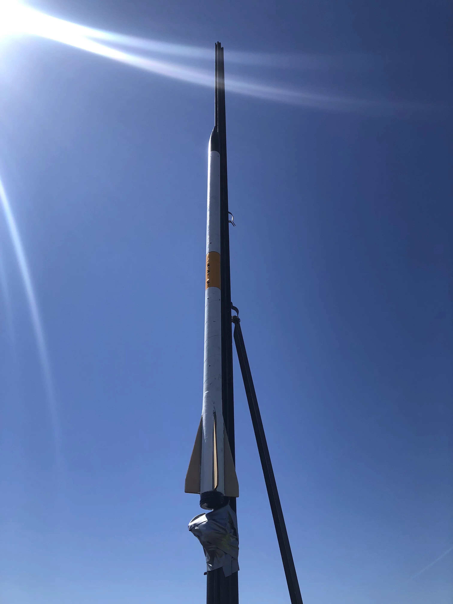
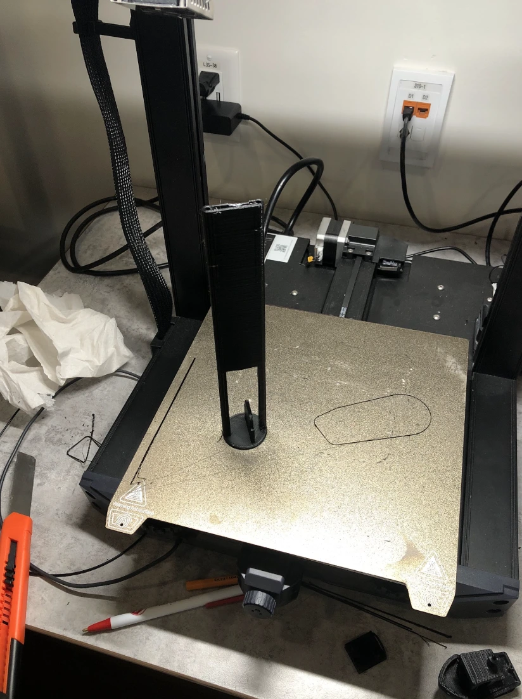
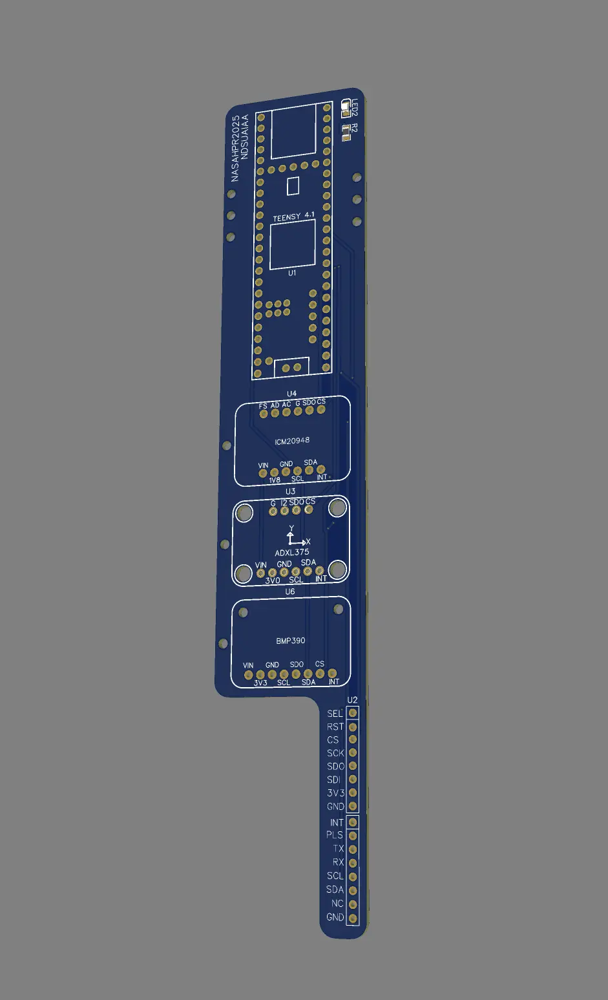
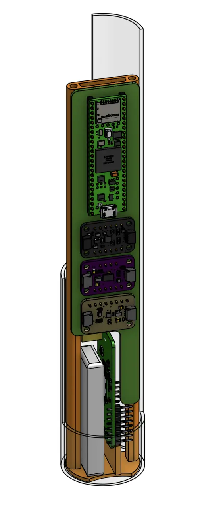
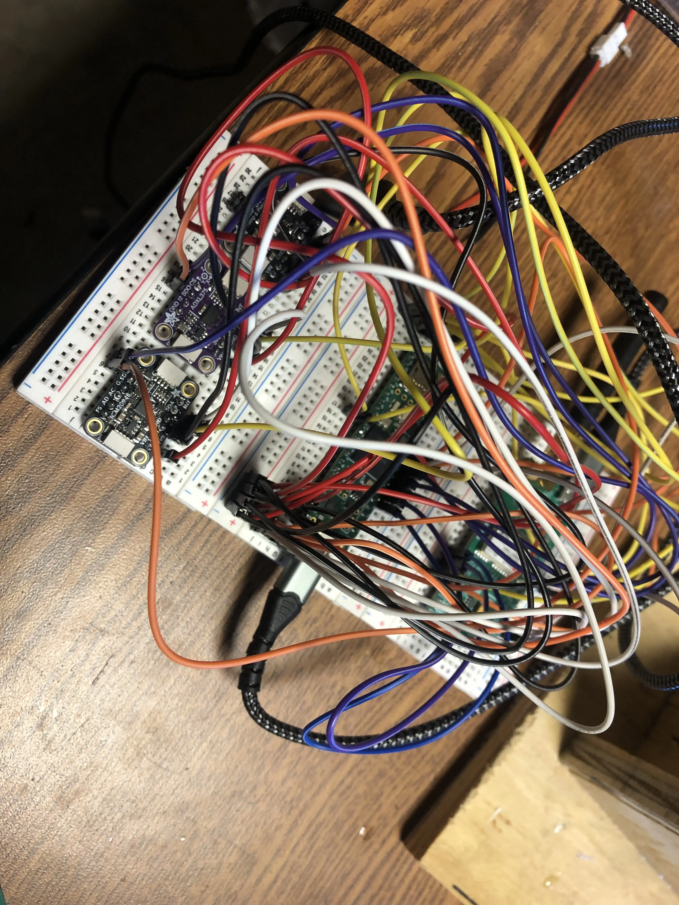
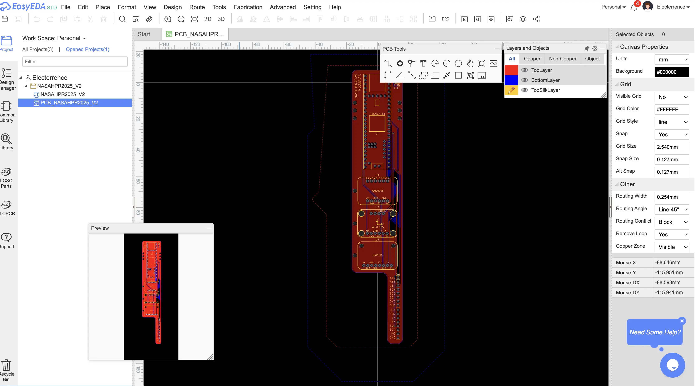

(*To see the latest version, scroll down to COOKED II)
COOKED I was developed for Space Grant Midwest High Powered Rocket Competition 2025 rules:
- 2 Flights: get to 1000 ft as close as possible, and max altitude
- Electronics bay with non-commercial sensors (like the ones used for Arduinos)
- Log in-flight acceleration, velocity, and position
With the 1000 ft and max altitude requirement, we opted to build a miniumum diameter rocket,
which is when the airframe diameter matches the motor diameter, minimizing drag and maximizing altitude.
This constraint led to the electronic bay's maximum diameter to be around 1.9 inches.


COMPONENT SELECTION (NON-COMMERCIAL SENSOR SUITE)
To select our components, we did online research on what other rocketry teams have used in the past. The Teensy 4.1
often surfaced, as it is exceptionally powerful due to its 600 MHz ARM Cortex-M7 processor, making it one of the fastest
MCUs (microcontrollers) available. Additionally, it offers extensive I/O pins, which will be important due to the unknown
number of needed peripherals for the whole system. For the IMUs, we had to account for the amount of g's the rocket would
experience at launch. Because of this, we opted for a 9-DOF ICM20948 which is rated for ±16 g (configurable), and the ADXL375 which
is rated for ±200 g. We went with these options as the other products we considered (such as the BNO055) were at either at
their EOL or discontinued. For the barometer, we opted for a BMP390, though for future designs I would recommend a BMP581, as
it sports 85% lower current consumption and 80% lower noise compared to the BMP390. For the GPS, we opted for the u-blox Neo
M10.


PROTOTYPING
To validate our component selection, I bought breakout boards and prototyped the circuit on a breadboard. I used VSCode with the PlatformIO extension,
which is an open source ecosystem that developers use for embedded systems applications. It is much better than Arduino IDE
as it offers library management and advanced debugging, concurrent with the IDE benefits of VSCode. I used pre-existing libraries to
access data from each sensor and send it to the serial monitor on my Mac, which allowed me to validate the sensor data and identify
any potential defects on the hardware. I had some troubles with accessing the magnometers on the ICM20948, and the BMP390 consitently
showed 0 pressure. The difficulty of the latter was likely a hardware issue, as replacing the sensor fixed the problem. While prototyping
I learned about different hardware commumnication protocols such as SPI, I2C, and UART. The Neo M10, as with most GPS sensors, communicate to the
MCUs via UART. Between SPI and I2C, I opted to use SPI for all the sensors since it operates at much higher speed (~80 MHz) than I2C (100-400 kHz),
and this speed would be critical, particularly for the lift-off phase.
DESIGN
Fitting the non-commercial sensor suite in a 1.9 inch inner diameter body tube proved to be extraordinarily difficult.
Cramming the sensors into the small tube meant wiring will get messy, and the risk of inadvertent wire pulls and cable strain increases.
Additionally, the competition rules require onboard commercial sensors and supporting peripherals, such as our dual-deploy altimeter
and batteries. To meet the spatial requirements, I determined that the best course of action was to design a printed circuit board (PCB),
which I had never done before.


I played around with KiCad, which is a powerful, open source desktop application designed for complex PCB/electrical design projects.
At this point, I had not taken an electrical engineering class yet, so I was not very familiar with electrical schematics.
Eventually, I found out about EasyEDA, which is a simpler browser based tool. Though KiCad is much more powerful for complex circuits,
EasyEDA provided a much more beginner friendly alternative, and it was "good enough" for my application. The first draft of my PCB was
esentially just footprints of the MCU, IMUs, BMP, and the NEO M10 chip. After showcasing the gerber file to Jeff Erickson from NDSU's ECE department for
review. There were two major issues:
- Lack of a copper ground pour (needed for a number of reasons)
- We did not have the direct capability to mount SMDs (such as our GPS and the tiny little LEDs I chose)
I needed to redesign the PCB to account for these issues. Alao, finding a breakout board for the GPS was difficult as the size constraint meant
I couldn't use any of the large u-blox boards. I was also blissfully unaware that the GPS chip needs an antenna, which I barely had the space for.
The final board outline took on an abnormal shape which made space for our GPS.
OUTCOME
When test launch day arrived, my electronics bay was not yet ready for flight. We opted to launch without it, since we were more
interested in testing the rocket itself (parachute deployment, etc.) rather than the electronics bay. The first phases of flight were successful,
and the ejection charge deployed as intended. However, the charge burned through the wadding and damaged the parachute. When the parachute deployed,
there was a hole in the canopy, and one of the suspension lines had been severed. The rocket struck the ground at high speed and was no longer usable
for competition. With our budget nearly exhausted and finals quickly approaching, our campaign for the year came to an end, as we did not have the
bandwidth to build another rocket. Despite this outcome, we still learned a lot about model rocketry design, manufacturing, and testing.
I also gained valuable experience in working with embedded systems, designing PCBs, and sensor fusion for future iterations.